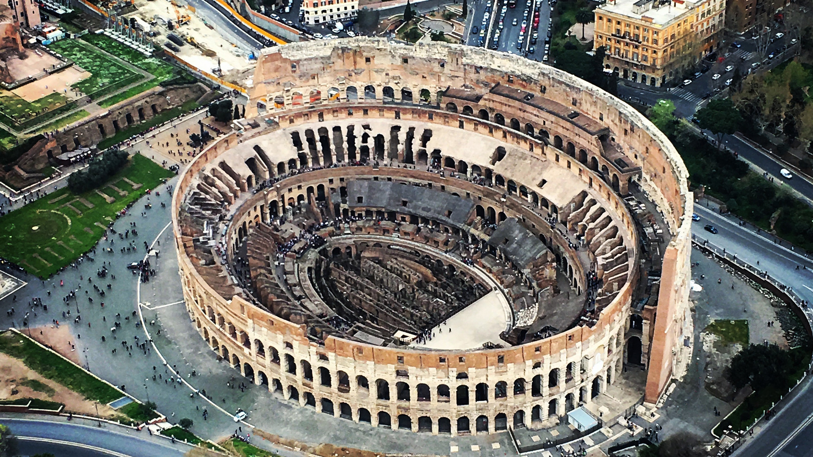

Roma
Roma
Roma, capitale d'Italia, è considerata una delle più belle città del mondo. Il suo centro storico, insieme alle proprietà extraterritoriali della Santa Sede dentro la città e alla Basilica di San Paolo Fuori le Mura, è tra i 58 siti italiani inseriti dall'Unesco nella World Heritage List.

Roma, comune più popoloso ed esteso d’Italia, si posiziona tra le maggiori capitali europee per grandezza del territorio.È la città con la più alta concentrazione di beni storici e architettonici al mondo; il suo centro storico delimitato dal perimetro delle mura aureliane, sovrapposizione di testimonianze di quasi tre millenni, è espressione del patrimonio storico, artistico e culturale del mondo occidentale europeo e, nel 1980, insieme alle proprietà extraterritoriali della Santa Sede nella città e la basilica di San Paolo fuori le mura, è stato inserito nella lista dei Patrimoni dell’umanità dell’UNESCO.
Simboli di questa magnifica città, oltre allo stemma comunale, sono la lupa capitolina, statua bronzea raffigurante la leggendaria lupa che allattò i due gemelli Romolo e Remo; il Colosseo, il più grande anfiteatro del mondo romano, riconosciuto, nel 2007, come una delle sette meraviglie del mondo moderno (unica in Europa); il Cupolone, la cupola della Basilica di San Pietro in Vaticano, che domina tutta la città e simboleggia il mondo cristiano.
Secondo la tradizione, Roma fu costruita sopra sette colli, la cui identificazione si perde nella storia delle origini della città, lasciando ancora dubbi tra gli storici. Il nucleo centrale e antico della città è costituito dagli storici sette colli: Palatino, Aventino, Campidoglio, Quirinale, Viminale, Esquilino e Celio.
